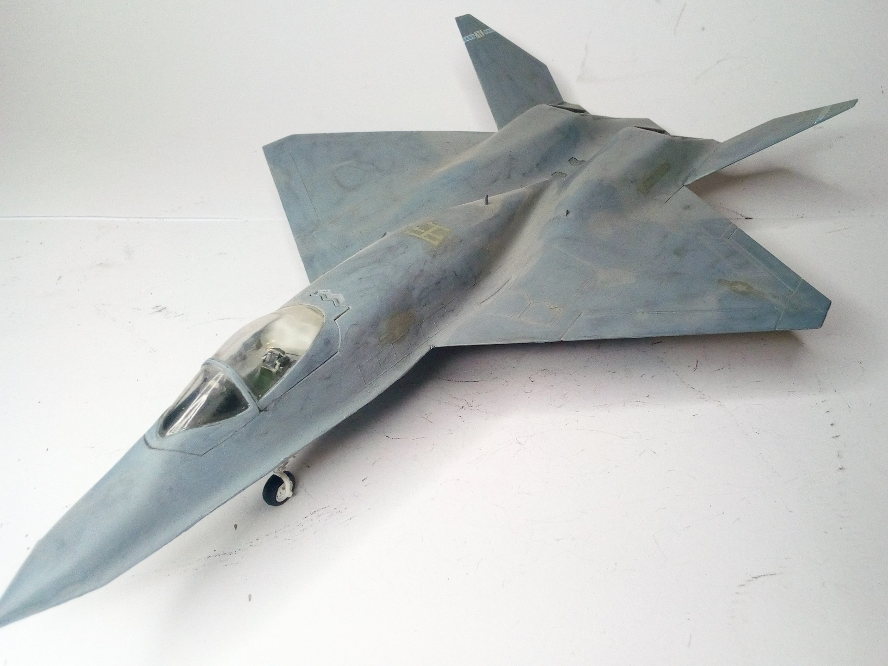
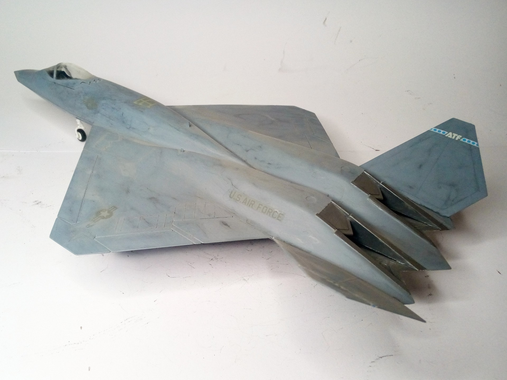

Aerei · scale model archive
Northrop YF23 A
Northrop YF23 A — Kit: Italeeri, Scale: 1/72. Intriguing and futuristic look #1/72 #Italeri #YF23

Photo gallery

English description
Intriguing and futuristic look
#1/72 #Italeri #YF23
Descrizione italiana
Aspetto intrigante e futuristico. #1/72 #Italeri #YF23